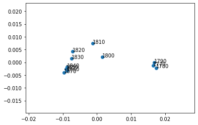

import json
import matplotlib.pyplot as plt
import numpy as np
from scipy import stats
from scipy import spatial
from collections import Counter
import os
import pickle
from sklearn.decomposition import PCA
from math import log
from utils import LanguageCounter
base dir is /home/lm686/scandinavian-languages
data dir is /share/magpie/datasets/Swedish
output dir is /home/lm686/scandinavian-languages/data/Finnish/temp_txt
earliest_time is 1740
finCountSource = "data/Finnish/temp_txt"
sweCountSource = "data/Swedish/"
decades = [str(i) for i in range(1750, 1910, 10)]
fin = LanguageCounter(finCountSource)
fin.buildCommonCounters(fin.dataPath)
adding decade 1770
adding decade 1780
adding decade 1790
adding decade 1800
adding decade 1810
adding decade 1820
adding decade 1830
adding decade 1840
adding decade 1850
adding decade 1860
adding decade 1870
swe = LanguageCounter(sweCountSource)
swe.buildCommonCounters(swe.dataPath)
adding decade 1780
adding decade 1820
adding decade 1840
adding decade 1860
adding decade 1880
adding decade 1800
adding decade 1760
adding decade 1750
adding decade 1770
adding decade 1790
adding decade 1810
adding decade 1830
adding decade 1850
adding decade 1870
adding decade 1890
finYears = list(fin.allCounters.keys()) # [y.astype(datetime) for y in fin.allCounters.keys()]
sweYears = list(swe.allCounters.keys())# [y.astype(datetime) for y in swe.allCounters.keys()]
# Similarity wrt 1770 decade over time
_, finSimToBase = fin.getOverlaps()
plt.plot(finYears, finSimToBase, label="Finnish")
_, sweSimToBase = swe.getOverlaps()
plt.plot(sweYears, sweSimToBase, label="Swedish")
plt.legend()
plt.title("% of overlap with first year")
plt.show()
fin.buildFeatures()
word ('och', 13093167) in % of texts: 1.0
word ('att', 7109041) in % of texts: 1.0
word ('den', 5927745) in % of texts: 1.0
word ('till', 5756171) in % of texts: 1.0
word ('för', 4744115) in % of texts: 1.0
word ('som', 3915510) in % of texts: 1.0
word ('med', 3811842) in % of texts: 1.0
word ('det', 3183713) in % of texts: 1.0
word ('sig', 2310128) in % of texts: 1.0
word ('ett', 2109138) in % of texts: 1.0
word ('icke', 1802716) in % of texts: 1.0
word ('har', 1649863) in % of texts: 1.0
word ('han', 1503086) in % of texts: 1.0
word ('eller', 1233506) in % of texts: 1.0
word ('samt', 1219247) in % of texts: 1.0
word ('man', 1206344) in % of texts: 1.0
word ('jag', 1062656) in % of texts: 1.0
word ('under', 1055095) in % of texts: 1.0
word ('vid', 1039063) in % of texts: 1.0
word ('sin', 1004965) in % of texts: 1.0
word ('hos', 995370) in % of texts: 1.0
word ('från', 959604) in % of texts: 1.0
word ('denna', 956351) in % of texts: 1.0
word ('wid', 952880) in % of texts: 1.0
word ('men', 925147) in % of texts: 1.0
word ('genom', 844444) in % of texts: 1.0
word ('alla', 831918) in % of texts: 1.0
word ('frän', 813767) in % of texts: 1.0
word ('hade', 785526) in % of texts: 1.0
word ('detta', 732097) in % of texts: 1.0
word ('efter', 694893) in % of texts: 1.0
word ('uti', 680761) in % of texts: 1.0
word ('skulle', 657775) in % of texts: 1.0
word ('der', 646706) in % of texts: 1.0
word ('utan', 626782) in % of texts: 1.0
word ('Den', 626016) in % of texts: 1.0
word ('Helsingfors', 607595) in % of texts: 1.0
word ('andra', 599951) in % of texts: 1.0
word ('kan', 597889) in % of texts: 1.0
word ('dem', 592168) in % of texts: 1.0
word ('mig', 580478) in % of texts: 1.0
word ('honom', 573149) in % of texts: 1.0
word ('hans', 543260) in % of texts: 1.0
word ('sina', 539187) in % of texts: 1.0
word ('Det', 536371) in % of texts: 1.0
word ('äro', 534454) in % of texts: 1.0
word ('var', 530142) in % of texts: 1.0
word ('hon', 524905) in % of texts: 1.0
word ('amp', 475606) in % of texts: 1.0
word ('skall', 473403) in % of texts: 1.0
word ('inom', 470686) in % of texts: 1.0
word ('dessa', 461492) in % of texts: 1.0
word ('sitt', 443264) in % of texts: 1.0
word ('ännu', 430115) in % of texts: 1.0
word ('kunna', 421768) in % of texts: 1.0
word ('dag', 418803) in % of texts: 1.0
word ('såsom', 406519) in % of texts: 1.0
word ('allt', 405076) in % of texts: 1.0
word ('alt', 402579) in % of texts: 1.0
word ('ben', 402074) in % of texts: 1.0
word ('samma', 400584) in % of texts: 1.0
word ('tid', 390264) in % of texts: 1.0
word ('war', 389736) in % of texts: 1.0
word ('dock', 380408) in % of texts: 1.0
word ('ock', 377000) in % of texts: 1.0
word ('emot', 368488) in % of texts: 1.0
word ('mot', 367618) in % of texts: 1.0
word ('endast', 364765) in % of texts: 1.0
word ('här', 359137) in % of texts: 1.0
word ('min', 358888) in % of texts: 1.0
word ('vara', 356621) in % of texts: 1.0
word ('mycket', 352310) in % of texts: 1.0
word ('hafva', 345068) in % of texts: 0.8181818181818182
word ('kunde', 342128) in % of texts: 1.0
word ('redan', 341381) in % of texts: 1.0
word ('första', 340374) in % of texts: 1.0
word ('Men', 338452) in % of texts: 1.0
word ('del', 336532) in % of texts: 1.0
word ('hvilka', 336275) in % of texts: 0.7272727272727273
word ('rum', 334090) in % of texts: 1.0
word ('deras', 331668) in % of texts: 1.0
word ('sedan', 324953) in % of texts: 1.0
word ('mark', 322761) in % of texts: 1.0
word ('mindre', 310843) in % of texts: 1.0
word ('öfver', 304612) in % of texts: 1.0
word ('hela', 303348) in % of texts: 1.0
word ('blifvit', 301990) in % of texts: 0.9090909090909091
word ('blott', 295967) in % of texts: 1.0
word ('någon', 293855) in % of texts: 1.0
word ('Jag', 290888) in % of texts: 1.0
word ('dess', 288105) in % of texts: 1.0
word ('göra', 286541) in % of texts: 1.0
word ('Till', 284360) in % of texts: 1.0
word ('kommer', 280815) in % of texts: 1.0
word ('äfven', 278450) in % of texts: 0.9090909090909091
word ('mera', 275024) in % of texts: 1.0
word ('all', 271434) in % of texts: 1.0
word ('Han', 269801) in % of texts: 1.0
word ('större', 262922) in % of texts: 1.0
word ('ifrån', 261234) in % of texts: 1.0
word ('följande', 258352) in % of texts: 1.0
word ('dagar', 255681) in % of texts: 1.0
word ('nya', 253870) in % of texts: 1.0
word ('hafwa', 250836) in % of texts: 1.0
word ('Finland', 250493) in % of texts: 1.0
word ('några', 247621) in % of texts: 1.0
word ('Petersburg', 245318) in % of texts: 1.0
word ('hvilken', 243065) in % of texts: 0.7272727272727273
word ('skola', 242775) in % of texts: 1.0
word ('wara', 241358) in % of texts: 1.0
word ('stora', 240557) in % of texts: 1.0
word ('henne', 239810) in % of texts: 1.0
word ('något', 238751) in % of texts: 1.0
word ('För', 236114) in % of texts: 1.0
word ('upp', 227113) in % of texts: 1.0
word ('for', 225061) in % of texts: 1.0
word ('komma', 224874) in % of texts: 1.0
word ('enligt', 221909) in % of texts: 1.0
word ('blifwit', 221220) in % of texts: 1.0
word ('äfwen', 220057) in % of texts: 1.0
word ('socken', 218704) in % of texts: 1.0
word ('annat', 216534) in % of texts: 1.0
word ('Och', 215349) in % of texts: 1.0
word ('Åbo', 214134) in % of texts: 1.0
word ('oss', 212415) in % of texts: 1.0
word ('Wiborg', 210947) in % of texts: 1.0
word ('varit', 207372) in % of texts: 1.0
word ('hennes', 206172) in % of texts: 1.0
word ('stor', 205918) in % of texts: 1.0
word ('öfwer', 205747) in % of texts: 1.0
word ('Juni', 204738) in % of texts: 0.9090909090909091
word ('stad', 204598) in % of texts: 1.0
word ('annan', 203396) in % of texts: 1.0
word ('Maj', 203347) in % of texts: 1.0
word ('Abo', 201310) in % of texts: 1.0
word ('staden', 200849) in % of texts: 1.0
word ('sätt', 200191) in % of texts: 1.0
word ('hwilka', 198793) in % of texts: 1.0
word ('måste', 198412) in % of texts: 1.0
word ('mer', 196716) in % of texts: 1.0
word ('tre', 195354) in % of texts: 1.0
word ('Stockholm', 194014) in % of texts: 1.0
word ('väl', 193151) in % of texts: 1.0
word ('Paris', 192647) in % of texts: 1.0
word ('Man', 191329) in % of texts: 1.0
word ('lör', 191066) in % of texts: 1.0
word ('London', 190101) in % of texts: 1.0
word ('hvarje', 189492) in % of texts: 0.6363636363636364
word ('bör', 189420) in % of texts: 1.0
word ('före', 186380) in % of texts: 1.0
word ('bland', 184894) in % of texts: 1.0
word ('jemte', 184457) in % of texts: 1.0
word ('barn', 183810) in % of texts: 1.0
word ('stall', 181920) in % of texts: 1.0
word ('emellan', 181309) in % of texts: 1.0
word ('finska', 180740) in % of texts: 0.8181818181818182
word ('ingen', 180673) in % of texts: 1.0
word ('personer', 180487) in % of texts: 1.0
word ('sade', 179667) in % of texts: 1.0
word ('landet', 177190) in % of texts: 1.0
word ('anledning', 177159) in % of texts: 1.0
word ('närmare', 175540) in % of texts: 1.0
word ('genast', 173448) in % of texts: 1.0
word ('torde', 172341) in % of texts: 1.0
word ('ord', 171821) in % of texts: 1.0
word ('omkring', 171590) in % of texts: 1.0
word ('kop', 171198) in % of texts: 1.0
word ('April', 171062) in % of texts: 1.0
word ('Herr', 170015) in % of texts: 1.0
word ('dagen', 168211) in % of texts: 1.0
word ('huru', 165822) in % of texts: 1.0
word ('rätt', 165319) in % of texts: 1.0
word ('Ett', 163773) in % of texts: 1.0
word ('gärd', 163278) in % of texts: 1.0
word ('helt', 163221) in % of texts: 1.0
word ('mellan', 162654) in % of texts: 1.0
word ('gärden', 161461) in % of texts: 1.0
word ('blef', 159782) in % of texts: 1.0
word ('förut', 157023) in % of texts: 1.0
word ('Juli', 154296) in % of texts: 0.9090909090909091
word ('sjelf', 154256) in % of texts: 1.0
word ('emedan', 153474) in % of texts: 1.0
word ('hvad', 152997) in % of texts: 0.6363636363636364
word ('hwad', 152470) in % of texts: 1.0
word ('Wasa', 151982) in % of texts: 1.0
word ('när', 151112) in % of texts: 1.0
word ('dennes', 150538) in % of texts: 1.0
word ('finnes', 149909) in % of texts: 1.0
word ('Mars', 149071) in % of texts: 0.9090909090909091
word ('von', 146859) in % of texts: 1.0
word ('Johan', 146426) in % of texts: 1.0
word ('hvilket', 145204) in % of texts: 0.7272727272727273
word ('god', 142937) in % of texts: 1.0
word ('pris', 142532) in % of texts: 1.0
word ('Med', 141437) in % of texts: 1.0
word ('fom', 141312) in % of texts: 1.0
word ('lill', 141074) in % of texts: 1.0
word ('September', 140390) in % of texts: 1.0
word ('lika', 139541) in % of texts: 1.0
word ('böra', 138927) in % of texts: 1.0
word ('säsom', 138543) in % of texts: 1.0
word ('warit', 138312) in % of texts: 1.0
word ('manad', 137720) in % of texts: 1.0
word ('Finlands', 137382) in % of texts: 1.0
word ('densamma', 137225) in % of texts: 1.0
word ('först', 136626) in % of texts: 1.0
word ('dig', 136609) in % of texts: 1.0
word ('nog', 136537) in % of texts: 1.0
word ('penni', 136490) in % of texts: 0.9090909090909091
word ('snart', 136372) in % of texts: 1.0
word ('Hans', 136278) in % of texts: 1.0
word ('wäl', 135804) in % of texts: 1.0
word ('fall', 135195) in % of texts: 1.0
word ('gamla', 134818) in % of texts: 1.0
word ('allmänna', 133305) in % of texts: 1.0
word ('denne', 133066) in % of texts: 1.0
word ('Finska', 132951) in % of texts: 1.0
word ('mcd', 130963) in % of texts: 1.0
word ('land', 130713) in % of texts: 1.0
word ('namn', 129433) in % of texts: 1.0
word ('dels', 128927) in % of texts: 1.0
word ('början', 128583) in % of texts: 1.0
word ('hwilken', 128184) in % of texts: 1.0
word ('vore', 128047) in % of texts: 1.0
word ('Carl', 127409) in % of texts: 1.0
word ('borde', 127282) in % of texts: 1.0
word ('också', 127242) in % of texts: 1.0
word ('Närmare', 125113) in % of texts: 0.9090909090909091
word ('sista', 125030) in % of texts: 1.0
word ('afseende', 124423) in % of texts: 1.0
word ('bet', 124390) in % of texts: 1.0
word ('November', 123846) in % of texts: 1.0
word ('aldrig', 123729) in % of texts: 1.0
word ('voro', 123476) in % of texts: 1.0
word ('gjort', 123290) in % of texts: 1.0
word ('ganska', 122722) in % of texts: 1.0
word ('Att', 122573) in % of texts: 1.0
word ('gar', 122241) in % of texts: 1.0
word ('Augusti', 121993) in % of texts: 0.9090909090909091
word ('hwarje', 121792) in % of texts: 1.0
word ('regeringen', 121661) in % of texts: 1.0
word ('åter', 121390) in % of texts: 0.9090909090909091
word ('län', 121074) in % of texts: 1.0
word ('sådant', 120847) in % of texts: 1.0
word ('vill', 120742) in % of texts: 1.0
word ('stället', 120741) in % of texts: 1.0
word ('sta', 120052) in % of texts: 1.0
word ('Äbo', 119439) in % of texts: 1.0
word ('Enligt', 119425) in % of texts: 1.0
word ('alltid', 119177) in % of texts: 1.0
swe.buildFeatures()
word ('och', 8797507) in % of texts: 1.0
word ('att', 4338934) in % of texts: 1.0
word ('till', 4184704) in % of texts: 1.0
word ('den', 3773970) in % of texts: 1.0
word ('för', 3011790) in % of texts: 1.0
word ('med', 2494393) in % of texts: 1.0
word ('som', 2305741) in % of texts: 1.0
word ('det', 2141029) in % of texts: 1.0
word ('ett', 1543461) in % of texts: 1.0
word ('sig', 1369393) in % of texts: 1.0
word ('han', 1081186) in % of texts: 1.0
word ('har', 1077902) in % of texts: 1.0
word ('samt', 945320) in % of texts: 1.0
word ('icke', 904895) in % of texts: 1.0
word ('från', 882296) in % of texts: 1.0
word ('under', 837031) in % of texts: 1.0
word ('wid', 832402) in % of texts: 1.0
word ('eller', 821835) in % of texts: 1.0
word ('hos', 811937) in % of texts: 1.0
word ('jag', 800365) in % of texts: 1.0
word ('man', 758882) in % of texts: 1.0
word ('men', 671261) in % of texts: 1.0
word ('vid', 666384) in % of texts: 1.0
word ('frän', 654518) in % of texts: 1.0
word ('denna', 583260) in % of texts: 1.0
word ('sin', 577196) in % of texts: 1.0
word ('alla', 553403) in % of texts: 1.0
word ('efter', 532099) in % of texts: 1.0
word ('hade', 522491) in % of texts: 1.0
word ('genom', 519064) in % of texts: 1.0
word ('detta', 472657) in % of texts: 1.0
word ('kan', 447824) in % of texts: 1.0
word ('öre', 409764) in % of texts: 1.0
word ('sorn', 407462) in % of texts: 1.0
word ('uti', 396147) in % of texts: 1.0
word ('var', 393346) in % of texts: 1.0
word ('der', 388632) in % of texts: 1.0
word ('hon', 384239) in % of texts: 1.0
word ('norrköping', 378385) in % of texts: 0.9333333333333333
word ('andra', 376357) in % of texts: 1.0
word ('honom', 365111) in % of texts: 1.0
word ('mot', 361097) in % of texts: 1.0
word ('hans', 359062) in % of texts: 1.0
word ('äro', 351217) in % of texts: 1.0
word ('utan', 346834) in % of texts: 1.0
word ('oell', 333007) in % of texts: 0.9333333333333333
word ('stockholm', 332647) in % of texts: 1.0
word ('kunna', 322937) in % of texts: 1.0
word ('mig', 321992) in % of texts: 1.0
word ('skulle', 321479) in % of texts: 1.0
word ('sedan', 309044) in % of texts: 1.0
word ('sör', 304908) in % of texts: 1.0
word ('örn', 303451) in % of texts: 1.0
word ('inom', 302929) in % of texts: 1.0
word ('dag', 301058) in % of texts: 1.0
word ('nied', 294427) in % of texts: 1.0
word ('sina', 292191) in % of texts: 1.0
word ('sitt', 286358) in % of texts: 1.0
word ('dessa', 284020) in % of texts: 1.0
word ('här', 283330) in % of texts: 1.0
word ('samma', 277006) in % of texts: 1.0
word ('allt', 275820) in % of texts: 1.0
word ('nya', 273405) in % of texts: 1.0
word ('war', 270538) in % of texts: 1.0
word ('mycket', 249260) in % of texts: 1.0
word ('ben', 248206) in % of texts: 1.0
word ('dem', 246469) in % of texts: 1.0
word ('rum', 246349) in % of texts: 1.0
word ('rdr', 242291) in % of texts: 0.8666666666666667
word ('lund', 239111) in % of texts: 1.0
word ('herr', 232302) in % of texts: 1.0
word ('mindre', 232225) in % of texts: 1.0
word ('större', 231304) in % of texts: 1.0
word ('wara', 231217) in % of texts: 1.0
word ('maj', 231181) in % of texts: 0.9333333333333333
word ('dagar', 230317) in % of texts: 1.0
word ('stora', 223067) in % of texts: 1.0
word ('endast', 220887) in % of texts: 1.0
word ('skall', 220854) in % of texts: 1.0
word ('dock', 217364) in % of texts: 1.0
word ('tid', 216891) in % of texts: 1.0
word ('första', 213906) in % of texts: 1.0
word ('såsom', 205809) in % of texts: 1.0
word ('april', 205237) in % of texts: 1.0
word ('kommer', 204592) in % of texts: 1.0
word ('ännu', 203276) in % of texts: 1.0
word ('del', 202645) in % of texts: 1.0
word ('min', 200429) in % of texts: 1.0
word ('oktober', 199806) in % of texts: 0.9333333333333333
word ('pris', 197341) in % of texts: 1.0
word ('hwilka', 196788) in % of texts: 1.0
word ('kongl', 194424) in % of texts: 1.0
word ('staden', 192485) in % of texts: 1.0
word ('torde', 189982) in % of texts: 1.0
word ('hela', 188732) in % of texts: 1.0
word ('vara', 187989) in % of texts: 1.0
word ('hafva', 186777) in % of texts: 1.0
word ('öfver', 186290) in % of texts: 1.0
word ('kunde', 185045) in % of texts: 1.0
word ('komma', 183299) in % of texts: 1.0
word ('äfven', 183006) in % of texts: 1.0
word ('genast', 174908) in % of texts: 1.0
word ('hafwa', 173081) in % of texts: 1.0
word ('enligt', 172577) in % of texts: 1.0
word ('någon', 172379) in % of texts: 1.0
word ('alt', 172244) in % of texts: 1.0
word ('något', 170246) in % of texts: 1.0
word ('lill', 169763) in % of texts: 1.0
word ('kronor', 169735) in % of texts: 0.9333333333333333
word ('följande', 169159) in % of texts: 1.0
word ('priser', 167193) in % of texts: 1.0
word ('närmare', 166493) in % of texts: 1.0
word ('dennes', 165397) in % of texts: 0.9333333333333333
word ('deras', 163813) in % of texts: 1.0
word ('göra', 161937) in % of texts: 1.0
word ('hvad', 161284) in % of texts: 1.0
word ('stor', 161224) in % of texts: 1.0
word ('sätt', 160445) in % of texts: 1.0
word ('flera', 160084) in % of texts: 1.0
word ('redan', 158227) in % of texts: 1.0
word ('norrköpings', 156817) in % of texts: 0.9333333333333333
word ('gamla', 156665) in % of texts: 1.0
word ('hwilken', 152887) in % of texts: 1.0
word ('dagen', 152477) in % of texts: 1.0
word ('omkring', 152350) in % of texts: 1.0
word ('bland', 151882) in % of texts: 1.0
word ('blott', 151507) in % of texts: 1.0
word ('malmö', 150844) in % of texts: 1.0
word ('god', 150619) in % of texts: 1.0
word ('mars', 150531) in % of texts: 1.0
word ('undertecknad', 150087) in % of texts: 0.9333333333333333
word ('äfwen', 149945) in % of texts: 1.0
word ('hvarje', 148841) in % of texts: 0.8
word ('finnes', 147400) in % of texts: 1.0
word ('blifwit', 147238) in % of texts: 0.9333333333333333
word ('öfwer', 146856) in % of texts: 1.0
word ('upp', 145461) in % of texts: 1.0
word ('carl', 145018) in % of texts: 1.0
word ('några', 144478) in % of texts: 1.0
word ('henne', 144263) in % of texts: 1.0
word ('juni', 142568) in % of texts: 1.0
word ('hennes', 142171) in % of texts: 1.0
word ('personer', 141413) in % of texts: 1.0
word ('juli', 141013) in % of texts: 1.0
word ('nästa', 140646) in % of texts: 1.0
word ('ock', 139490) in % of texts: 1.0
word ('jemte', 139256) in % of texts: 1.0
word ('hvilka', 139090) in % of texts: 0.9333333333333333
word ('stall', 138540) in % of texts: 1.0
word ('hvilken', 138356) in % of texts: 1.0
word ('emot', 136750) in % of texts: 1.0
word ('ooh', 135789) in % of texts: 0.6666666666666666
word ('mellan', 134472) in % of texts: 1.0
word ('wäl', 133396) in % of texts: 1.0
word ('dito', 132348) in % of texts: 1.0
word ('hwad', 131918) in % of texts: 1.0
word ('boktryckeriet', 131593) in % of texts: 0.9333333333333333
word ('kök', 130649) in % of texts: 1.0
word ('barn', 129290) in % of texts: 1.0
word ('när', 128347) in % of texts: 1.0
word ('ingen', 126712) in % of texts: 1.0
word ('godt', 126443) in % of texts: 1.0
word ('annat', 126156) in % of texts: 1.0
word ('väl', 125412) in % of texts: 1.0
word ('warit', 124050) in % of texts: 1.0
word ('dels', 120351) in % of texts: 1.0
word ('lager', 119576) in % of texts: 1.0
word ('mera', 119066) in % of texts: 1.0
word ('torget', 117120) in % of texts: 1.0
word ('härstädes', 117109) in % of texts: 1.0
word ('förut', 116933) in % of texts: 1.0
word ('tre', 116755) in % of texts: 1.0
word ('annan', 116593) in % of texts: 1.0
word ('september', 115809) in % of texts: 1.0
word ('före', 115433) in % of texts: 1.0
word ('varit', 114865) in % of texts: 0.9333333333333333
word ('auktion', 114297) in % of texts: 0.9333333333333333
word ('plats', 112507) in % of texts: 1.0
word ('stadens', 112261) in % of texts: 0.9333333333333333
word ('mer', 111358) in % of texts: 1.0
word ('ali', 110331) in % of texts: 1.0
word ('kapten', 110212) in % of texts: 0.7333333333333333
word ('sjelf', 109930) in % of texts: 1.0
word ('all', 108362) in % of texts: 1.0
word ('blifvit', 108248) in % of texts: 1.0
word ('januari', 108172) in % of texts: 1.0
word ('säsom', 108154) in % of texts: 1.0
word ('december', 108145) in % of texts: 1.0
word ('fru', 106729) in % of texts: 1.0
word ('goda', 106389) in % of texts: 1.0
word ('carlskrona', 106131) in % of texts: 0.8666666666666667
word ('hyra', 105324) in % of texts: 1.0
word ('dess', 105095) in % of texts: 0.9333333333333333
word ('hwarje', 104855) in % of texts: 0.9333333333333333
word ('bör', 104511) in % of texts: 1.0
word ('augusti', 104457) in % of texts: 0.9333333333333333
word ('göteborg', 103516) in % of texts: 0.8666666666666667
word ('tiden', 101183) in % of texts: 1.0
word ('par', 101089) in % of texts: 1.0
word ('anledning', 100231) in % of texts: 1.0
word ('finnas', 99968) in % of texts: 1.0
word ('skola', 99256) in % of texts: 1.0
word ('herrar', 99114) in % of texts: 1.0
word ('salu', 98506) in % of texts: 1.0
word ('hwilket', 98238) in % of texts: 1.0
word ('billigt', 98032) in % of texts: 1.0
word ('stället', 97573) in % of texts: 1.0
word ('helt', 97424) in % of texts: 1.0
word ('månad', 97292) in % of texts: 0.9333333333333333
word ('härmed', 96585) in % of texts: 1.0
word ('billiga', 96565) in % of texts: 0.9333333333333333
word ('början', 95144) in % of texts: 1.0
word ('von', 94880) in % of texts: 1.0
word ('nägon', 94806) in % of texts: 1.0
word ('nästkommande', 94788) in % of texts: 1.0
word ('sista', 94325) in % of texts: 0.9333333333333333
word ('stort', 94322) in % of texts: 1.0
word ('snart', 93711) in % of texts: 1.0
word ('lika', 93061) in % of texts: 1.0
word ('gärd', 92874) in % of texts: 1.0
word ('november', 92112) in % of texts: 1.0
word ('blef', 91644) in % of texts: 1.0
word ('februari', 91226) in % of texts: 0.9333333333333333
word ('lördagen', 91081) in % of texts: 1.0
word ('huset', 91059) in % of texts: 1.0
word ('hus', 91035) in % of texts: 1.0
word ('emellertid', 90884) in % of texts: 0.8666666666666667
word ('nog', 90425) in % of texts: 1.0
word ('socken', 90318) in % of texts: 0.9333333333333333
word ('andersson', 89630) in % of texts: 1.0
word ('meddelar', 89519) in % of texts: 1.0
word ('ester', 89314) in % of texts: 1.0
word ('allmänna', 88726) in % of texts: 1.0
word ('oss', 87961) in % of texts: 1.0
word ('ord', 87631) in % of texts: 1.0
word ('mäste', 87494) in % of texts: 1.0
word ('norra', 87130) in % of texts: 1.0
word ('son', 87095) in % of texts: 1.0
word ('kontor', 86548) in % of texts: 0.6666666666666666
word ('går', 86412) in % of texts: 1.0
word ('derefter', 86396) in % of texts: 1.0
word ('rätt', 86143) in % of texts: 1.0
word ('arbete', 85986) in % of texts: 1.0
word ('afton', 85897) in % of texts: 1.0
word ('parti', 85075) in % of texts: 0.9333333333333333
word ('afgår', 84631) in % of texts: 0.9333333333333333
word ('linköping', 84446) in % of texts: 0.8666666666666667
word ('ocb', 84376) in % of texts: 0.9333333333333333
word ('aldrig', 84347) in % of texts: 1.0
word ('paris', 84237) in % of texts: 1.0
similarity = [1-spatial.distance.cosine(fin.allFeatize[0], fin.allFeatize[i]) for i in range(len(fin.allFeatize))]
plt.plot(finYears, similarity, label="Finnish")
similarity = [1-spatial.distance.cosine(swe.allFeatize[0], swe.allFeatize[i]) for i in range(len(swe.allFeatize))]
plt.plot(sweYears, similarity, label="Swedish")
plt.title("Similarity to first decade over time")
plt.legend()
plt.show()
---------------------------------------------------------------------------
AttributeError Traceback (most recent call last)
<ipython-input-7-e576ba35a908> in <module>
----> 1 similarity = [1-spatial.distance.cosine(fin.allFeatize[0], fin.allFeatize[i]) for i in range(len(fin.allFeatize))]
2 plt.plot(finYears, similarity, label="Finnish")
3 similarity = [1-spatial.distance.cosine(swe.allFeatize[0], swe.allFeatize[i]) for i in range(len(swe.allFeatize))]
4 plt.plot(sweYears, similarity, label="Swedish")
5 plt.title("Similarity to first decade over time")
AttributeError: 'LanguageCounter' object has no attribute 'allFeatize'
pca = PCA(n_components=4)
pca_result= pca.fit_transform(fin.allFeatize)
x = pca_result[:, 0]
y = pca_result[:,1]
plt.scatter(x, y)
for i in range(len(list(fin.allCounters.keys()))):
plt.annotate(list(fin.allCounters.keys())[i], (x[i], y[i]))
plt.show()

Project with both languages¶
# Find top 250 most frequent words across both langauges, based on frequency
totalSwed = sum([s[1] for s in swe.topWordsCounter])
freqsSwed = []
for c in swe.topWordsCounter:
freqsSwed += [(c[0], c[1]/totalSwed)]
totalFin = sum([s[1] for s in fin.topWordsCounter])
freqsFin = []
for c in fin.topWordsCounter:
freqsFin += [(c[0], c[1]/totalFin)]
combined = Counter()
for word in freqsSwed:
combined[word[0]] += word[1]
for word in freqsFin:
combined[word[0]] += word[1]
sweAllFeatize = []
for counter in list(swe.allCounters.values()):
lenDoc = sum(counter.values())
#featize = np.array([counter[combined[i][0]] for i in range(len(combined))])
featize = np.array([counter[k] for k,v in combined.items()])
featize = np.divide(featize, lenDoc)
sweAllFeatize += [featize]
finAllFeatize = []
for counter in list(fin.allCounters.values()):
lenDoc = sum(counter.values())
#featize = np.array([counter[combined[i][0]] for i in range(len(combined))])
featize = np.array([counter[k] for k,v in combined.items()])
featize = np.divide(featize, lenDoc)
finAllFeatize += [featize]
print(len(sweAllFeatize), len(finAllFeatize))
15 11
pca = PCA(n_components=4)
pca_result= pca.fit_transform(sweAllFeatize + finAllFeatize)
x_swe = pca_result[:15, 0]
x_fin = pca_result[15:,0]
y_swe = pca_result[:15,1]
y_fin = pca_result[15:,1]
plt.scatter(x_swe, y_swe, label="Swedish")
for i in range(len(list(swe.allCounters.keys()))):
plt.annotate(list(swe.allCounters.keys())[i], (x_swe[i], y_swe[i]))
plt.scatter(x_fin, y_fin, label="Finnish")
for i in range(len(list(fin.allCounters.keys()))):
plt.annotate(list(fin.allCounters.keys())[i], (x_fin[i], y_fin[i]))
plt.legend()
plt.show()
Initial Qualitative Analysis¶
“wid” in Finnish vs. “vid” in Swedish- are they same word/different spelling?
från(F) vs. frän (S)
Helsingfors (F), stockholm (S) & norrkoping
Words I’m not sure about: amp, Det, sina, ore,
Generally similar words, but different orderings
print(fin.topWordsTotal[:50], "\n", swe.topWordsTotal[:50])
['och', 'att', 'den', 'till', 'för', 'som', 'med', 'det', 'sig', 'ett', 'icke', 'har', 'han', 'eller', 'samt', 'man', 'jag', 'under', 'vid', 'sin', 'hos', 'från', 'denna', 'wid', 'men', 'genom', 'alla', 'frän', 'hade', 'detta', 'efter', 'uti', 'skulle', 'der', 'utan', 'Den', 'Helsingfors', 'andra', 'kan', 'dem', 'mig', 'honom', 'hans', 'sina', 'Det', 'äro', 'var', 'hon', 'amp', 'skall']
['och', 'att', 'till', 'den', 'för', 'med', 'som', 'det', 'ett', 'sig', 'han', 'har', 'samt', 'icke', 'från', 'under', 'wid', 'eller', 'hos', 'jag', 'man', 'men', 'vid', 'frän', 'denna', 'sin', 'alla', 'efter', 'hade', 'genom', 'detta', 'kan', 'öre', 'sorn', 'uti', 'var', 'der', 'hon', 'norrköping', 'andra', 'honom', 'mot', 'hans', 'äro', 'utan', 'oell', 'stockholm', 'kunna', 'mig', 'skulle']
print("in F but not S: ", set(fin.topWordsTotal[:50]).difference(swe.topWordsTotal[:50]))
print("in S but not F: ", set(swe.topWordsTotal[:50]).difference(fin.topWordsTotal[:50]) )
in F but not S: {'amp', 'Det', 'sina', 'skall', 'Helsingfors', 'Den', 'dem'}
in S but not F: {'stockholm', 'norrköping', 'öre', 'kunna', 'oell', 'sorn', 'mot'}
Overlapping Words¶
totalFin = [sum(c) for c in fin.allCounters.values()]
totalSwe = sum(swe.allCounters.values(), Counter())
overlaps = []
simToBase = []
for i in range(len(fin.commonWords)-1):
overlaps += [(set(fin.commonWords[i]).intersection(fin.commonWords[i+1]))]
for i in range(len(fin.commonWords)-1):
decade = list(fin.commonWords.keys())[i]
overlaps += [fin.commonWords[decade].intersection(decade)]
finEntireOverlap = set.intersection(*[set(v) for k, v in fin.commonWords.items()])
sweEntireOverlap = set.intersection(*[set(v) for k, v in swe.commonWords.items()])
print("Finnish overlap words {:d}: \n{:s}".format(len(finEntireOverlap), str(finEntireOverlap)))
print("Swedish overlap words {:d}: \n{:s}".format(len(sweEntireOverlap), str(sweEntireOverlap)))
Finnish overlap words 63:
{'han', 'hos', 'sin', 'frän', 'emot', 'med', 'sig', 'kunde', 'hon', 'genom', 'mera', 'hans', 'Den', 'endast', 'tid', 'denna', 'detta', 'äro', 'kan', 'som', 'efter', 'wid', 'första', 'alt', 'del', 'uti', 'alla', 'deras', 'och', 'all', 'den', 'Det', 'här', 'till', 'sedan', 'men', 'sina', 'min', 'icke', 'har', 'kunna', 'hade', 'der', 'andra', 'under', 'för', 'dag', 'samma', 'eller', 'man', 'honom', 'dem', 'Men', 'hela', 'ock', 'ännu', 'mig', 'utan', 'jag', 'att', 'samt', 'det', 'amp'}
Swedish overlap words 36:
{'han', 'hos', 'sin', 'sig', 'med', 'hans', 'denna', 'detta', 'äro', 'kan', 'som', 'efter', 'stockholm', 'alla', 'och', 'den', 'här', 'till', 'sedan', 'icke', 'har', 'hade', 'andra', 'under', 'för', 'samma', 'eller', 'man', 'honom', 'mig', 'ett', 'utan', 'jag', 'samt', 'det', 'men'}